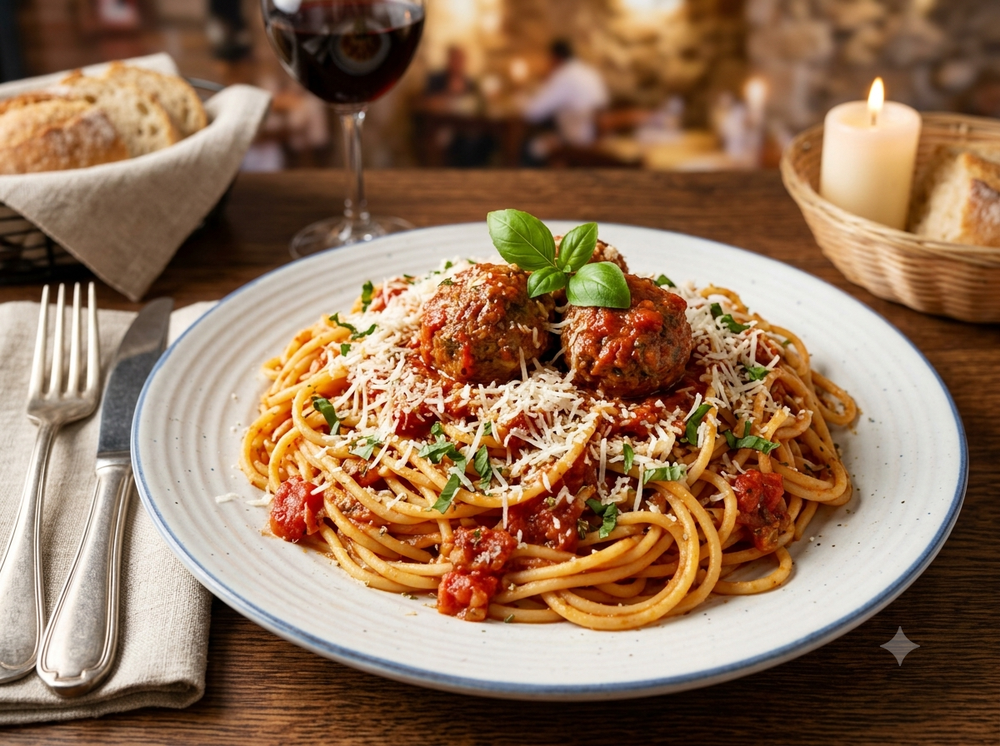

Home
Spaghetti

A simple and flavorful spaghetti recipe with a rich tomato meat sauce.
Ingredients
- 500 g spaghetti noodles
- 500 g ground beef
- 1 jar of spaghetti sauce
- 1 small onion, chopped
- 3 cloves of garlic, minced
- 1 tablespoon of cooking oil
- Salt and black pepper to taste
- Grated cheese
Instructions
- Boil water in a large pot and add a pinch of salt.
- Cook the spaghetti noodles according to the package instructions.
- Drain the noodles and set them aside.
- Heat oil in a pan, then sauté the garlic and onion until fragrant.
- Add the ground beef and cook until browned.
- Pour in the spaghetti sauce and mix well.
- Season with salt and black pepper, then simmer for 10 minutes.
- Place the noodles on a plate and pour the sauce over them.
- Add grated cheese on top before serving.